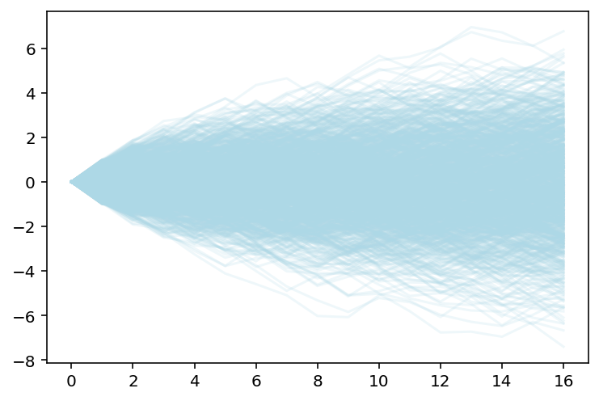

Code
from numpy import random
import pandas as pd
import plotly.express as px
import plotly.graph_objects as goPrototyping the Shinylive dashboard data visualization.
from numpy import random
import pandas as pd
import plotly.express as px
import plotly.graph_objects as goGenerating random numbers - either 1 or -1 with the random function:
r = random.randint(low = -1, high=1, size= 10, dtype=int).tolist()
print(type(r))
r = [1 if i == 0 else i for i in r]
r<class 'list'>[-1, -1, 1, 1, 1, 1, 1, 1, 1, 1]Create a function for generating random numbers by range of numbers:
def random_steps(steps = 16, type = "float", low = -1, high = 1):
if type == "int":
r = random.randint(low = low, high=high, size= steps, dtype=int).tolist()
r = [high if i == 0 else i for i in r]
elif type == "float":
r = (high - low) * random.random_sample(size = steps) + low
else:
print("The type argument is not valid")
return
return rCreate a cumsum function:
def cumsum(l):
c = []
t = 0
for i in range(0, len(l)):
t += l[i]
c.append(t)
return(c)Create a simulation function:
def sim_steps(sim_number = 10, steps = 16, type = "float"):
s = []
d = pd.DataFrame()
for i in range(0, sim_number):
v1 = [0]
v2 = random_steps(steps = steps, type = type)
if not isinstance(v2, list):
v2 = v2.tolist()
v = cumsum(v1 + v2)
d_temp = pd.DataFrame({"sim": i, "step": range(0, len(v)), "y": v})
d = pd.concat([d, d_temp])
return dTest the function:
sim_df = sim_steps(sim_number = 5, type = "int")
sim_df| sim | step | y | |
|---|---|---|---|
| 0 | 0 | 0 | 0 |
| 1 | 0 | 1 | -1 |
| 2 | 0 | 2 | 0 |
| 3 | 0 | 3 | 1 |
| 4 | 0 | 4 | 0 |
| ... | ... | ... | ... |
| 12 | 4 | 12 | 4 |
| 13 | 4 | 13 | 3 |
| 14 | 4 | 14 | 4 |
| 15 | 4 | 15 | 3 |
| 16 | 4 | 16 | 2 |
85 rows × 3 columns
sim_test = sim_steps(sim_number = 5, type = "float")
sim_test| sim | step | y | |
|---|---|---|---|
| 0 | 0 | 0 | 0.000000 |
| 1 | 0 | 1 | 0.724202 |
| 2 | 0 | 2 | -0.016728 |
| 3 | 0 | 3 | -0.037860 |
| 4 | 0 | 4 | -0.711264 |
| ... | ... | ... | ... |
| 12 | 4 | 12 | 0.137683 |
| 13 | 4 | 13 | 0.754038 |
| 14 | 4 | 14 | 1.325207 |
| 15 | 4 | 15 | 1.737881 |
| 16 | 4 | 16 | 2.390116 |
85 rows × 3 columns
sim_df.sim.unique()array([0, 1, 2, 3, 4])sim_df = sim_steps(sim_number = 1000, type = "float")def plotly_sim(sim_number = 10, steps = 16, type = "float"):
sim_df = sim_steps(sim_number = sim_number, steps = steps, type = type)
p = go.Figure()
for i in sim_df.sim.unique():
df = sim_df[sim_df["sim"] == i]
p.add_trace(go.Scatter(x=df["step"], y=df["y"],
mode='lines',
name='lines',
showlegend = False,
line=dict(color="rgba( 143, 82, 244,0.1)" , width=1)))
return p.show()plotly_sim(sim_number = 1000, steps = 16, type = "float")import matplotlib.pyplot as plt
def plot_sim(sim_number = 10, steps = 16, type = "float", color = "lightblue", alpha = 0.2):
sim_df = sim_steps(sim_number = sim_number, steps = steps, type = type)
for i in sim_df.sim.unique():
df = sim_df[sim_df["sim"] == i]
plt.plot(df["step"], df["y"], color = color, alpha= alpha)
return plt.show()plot_sim(sim_number = 1000, steps = 16, type = "float", color = "lightblue", alpha = 0.2)